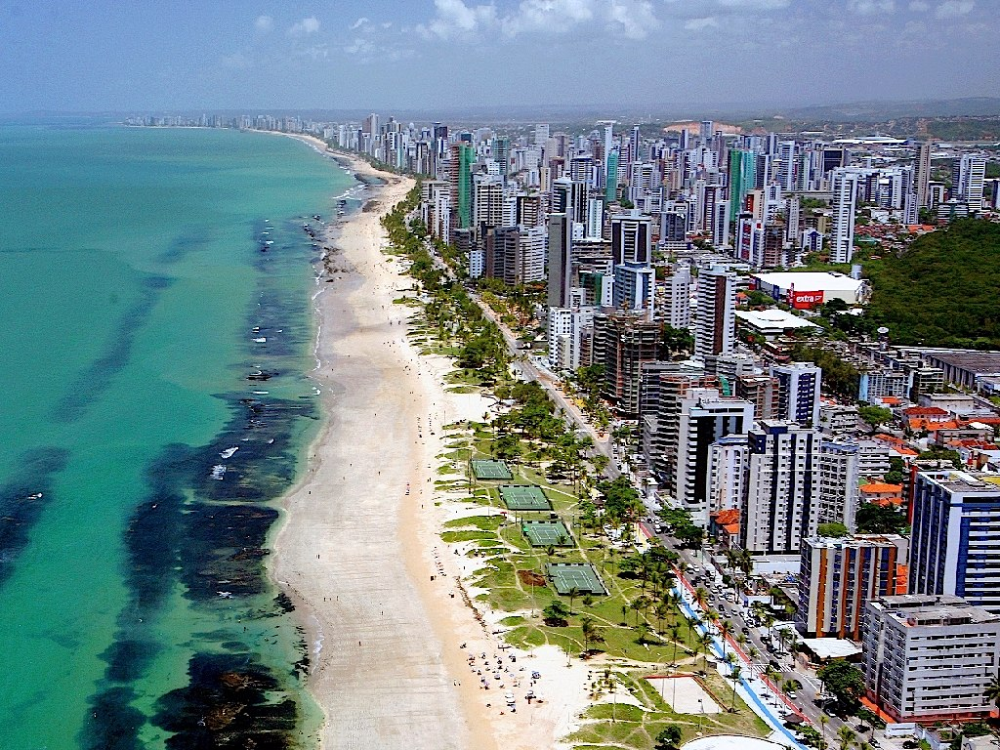

ABOUT
Most people I've come across here at the UMaine are either in state, or from a nearby state. I however am from Brookfield, CT, which is a six hours away. I was drawn to UMaine due to the friendliness of most Mainers, the quality of UMaine's facilties, and pretty much just wanting to be on my own. I'm a dual citizen (Brazil & U.S), as I moved to the U.S with my family when I was seven years old. In High School, I was a 5 time varsity letterman between Football, wrestling, and track. I was also involved in business clubs such as DECA and Student Council a As of right now I am Business Undeclared but I am certainly going to major in finance with a concentration in MIS. I want to one day be a financial analyst or Stock Broker. Besides from moving to the U.S, I have not done much traveling, so hopefully my job is located somewhere interesting. I would love to work somewhere like Silicon Valley or Boston.

Home About Contact Sports Hobbies